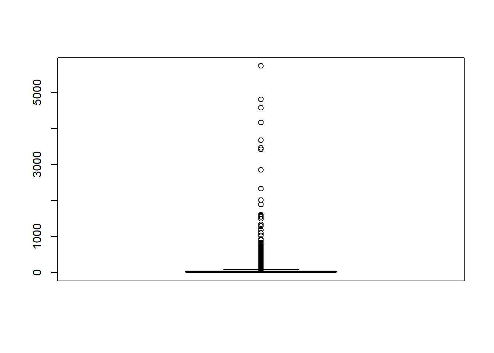
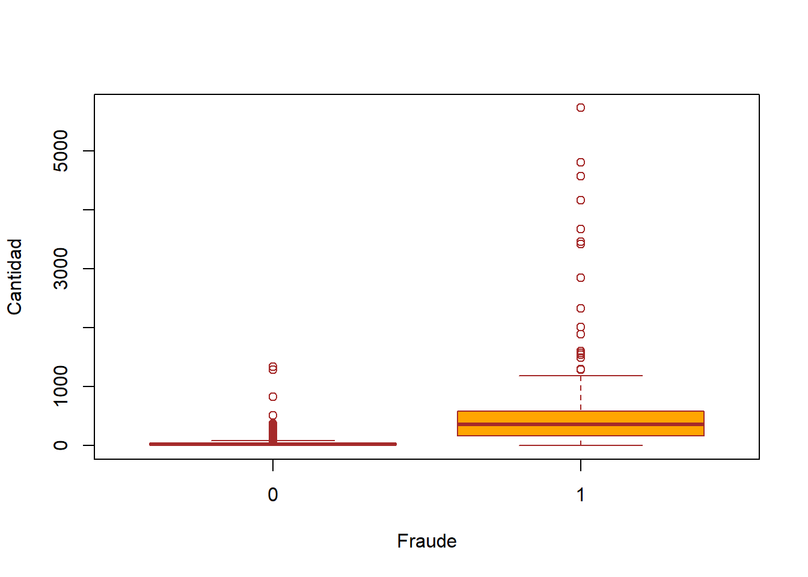
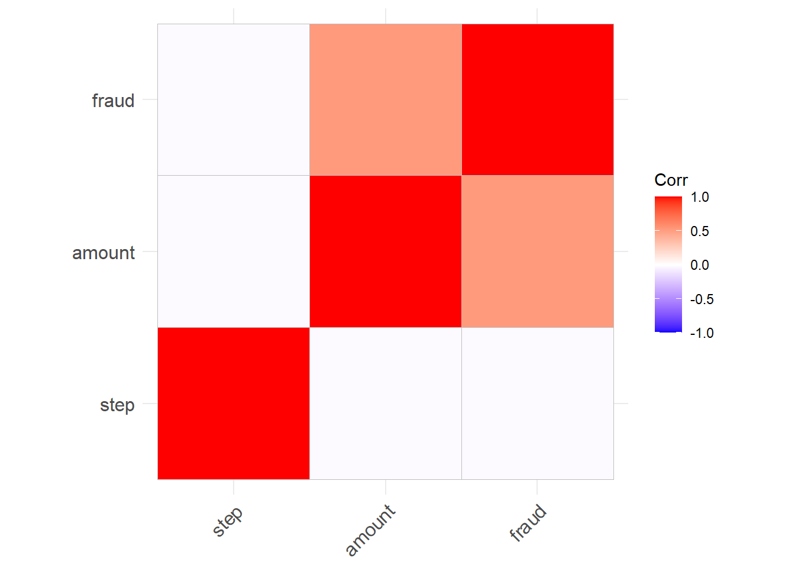
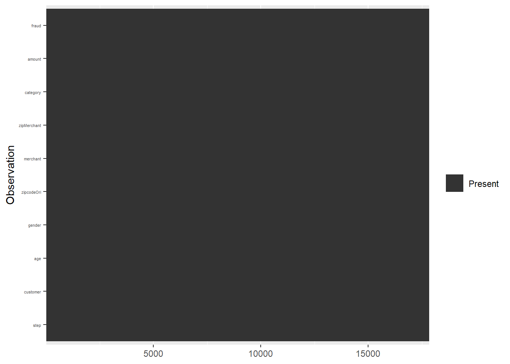

Código
# Carga de paquetes necesarios
knitr::opts_chunk$set(warning = FALSE)
knitr::opts_chunk$set(message = FALSE)
library(tidyverse)
library(tidymodels)Análisis Exploratorio
A lo largo de las clases se trabajará con un dataset extraído de Kaggle
# Carga de paquetes necesarios
knitr::opts_chunk$set(warning = FALSE)
knitr::opts_chunk$set(message = FALSE)
library(tidyverse)
library(tidymodels)data <- read_csv('data/df_fraude.csv')
glimpse(data)Rows: 17,839
Columns: 10
$ step <dbl> 0, 0, 0, 0, 0, 0, 0, 0, 0, 0, 0, 0, 0, 0, 0, 0, 0, 0, 0, 0~
$ customer <chr> "'C60351691'", "'C1038996959'", "'C574062699'", "'C8308634~
$ age <chr> "'2'", "'2'", "'2'", "'6'", "'2'", "'4'", "'3'", "'4'", "'~
$ gender <chr> "'F'", "'M'", "'M'", "'M'", "'F'", "'M'", "'M'", "'F'", "'~
$ zipcodeOri <chr> "'28007'", "'28007'", "'28007'", "'28007'", "'28007'", "'2~
$ merchant <chr> "'M1823072687'", "'M348934600'", "'M348934600'", "'M182307~
$ zipMerchant <chr> "'28007'", "'28007'", "'28007'", "'28007'", "'28007'", "'2~
$ category <chr> "'es_transportation'", "'es_transportation'", "'es_transpo~
$ amount <dbl> 36.88, 31.32, 43.75, 14.20, 2.63, 50.90, 15.69, 14.36, 0.1~
$ fraud <dbl> 0, 0, 0, 0, 0, 0, 0, 0, 0, 0, 0, 0, 0, 0, 0, 0, 0, 0, 0, 0~Step: representa el día en que la transacción sucede. En total son 180 steps, por lo que la base de datos es por 6 meses.
Customer: representa el ID de la persona que inicia la transacción. Está formada con la letra C seguida por una secuencia unica de 10 numeros.
Age: esta variable se divide en intervalos de edad, comenzando de 0 a 6 y la letra U que significa Unknown. La edad es Unknow solo para las transacciones que tienen el mismo género que Enterprise. La codificación de los números es:
Gender: esta variable se codifica como F para Mujer, M para Hombre, E para Empresa y U para Unknown.
Merchant: esta variable representa la identificación única de la parte que recibe la transacción. Similar a la identificación del cliente, la secuencia está formada por la letra M, seguida de una serie de 9 números. Hay un total de 50 comerciantes únicos en el conjunto de datos.
Category: hay 15 categorías únicas que etiquetan el tipo general de transacción: transporte, comida, salud, bienestar y belleza, moda, bares y restaurantes, hiper, deportes y juguetes, tecnología, hogar, servicios de hotel, otros servicios, contenidos, viajes, ocio.
Amount: representa el valor de la transacción. Solo hay 52 valores iguales a 0 y ningún valor negativo.
Fraud: una columna indicadora codificada con 0 si la transacción fue limpia y con 1 si la transacción fue fraudulenta.
zipcodeOri y zipMerchant: contienen un valor constante de 28007, que es un código postal en Ansonville, Carolina del Norte, Estados Unidos.
boxplot(data$amount)
Según Fraud:
boxplot(amount~fraud,
data=data,
xlab="Fraude",
ylab="Cantidad",
col="orange",
border="brown"
)
¿Cuántos datos corresponden a transacciones fraudulentes y no fraudulentas?
data %>%
group_by(fraud) %>%
summarise(cnt = n()) %>%
mutate(freq = round(cnt / sum(cnt), 2))# A tibble: 2 x 3
fraud cnt freq
<dbl> <int> <dbl>
1 0 17639 0.99
2 1 200 0.01Los algoritmos de aprendizaje automático requieren exclusivamente datos numéricos. Por lo que, es necesario transformar nuestras variables categóricas a algún formato numérico.
library(kableExtra)
count(data, category) %>% arrange(n) %>%
knitr::kable(format = "html")%>%
kable_styling() | category | n |
|---|---|
| 'es_leisure' | 15 |
| 'es_contents' | 20 |
| 'es_travel' | 25 |
| 'es_otherservices' | 35 |
| 'es_home' | 47 |
| 'es_hotelservices' | 47 |
| 'es_tech' | 78 |
| 'es_sportsandtoys' | 109 |
| 'es_hyper' | 163 |
| 'es_barsandrestaurants' | 182 |
| 'es_fashion' | 188 |
| 'es_wellnessandbeauty' | 452 |
| 'es_health' | 539 |
| 'es_food' | 822 |
| 'es_transportation' | 15117 |
count(data, gender) %>% arrange(n)# A tibble: 4 x 2
gender n
<chr> <int>
1 'U' 15
2 'E' 26
3 'M' 7961
4 'F' 9837Vamos a categorizar a la variable Age
library(caret)
#define one-hot encoding function
dummy <- dummyVars("fraud ~ gender", data=data)
#perform one-hot encoding on data frame
final_df <- data.frame(predict(dummy, newdata=data))
#view final data frame
head (final_df, 10) %>%
knitr::kable(format = "html")%>%
kable_styling()| gender.E. | gender.F. | gender.M. | gender.U. |
|---|---|---|---|
| 0 | 1 | 0 | 0 |
| 0 | 0 | 1 | 0 |
| 0 | 0 | 1 | 0 |
| 0 | 0 | 1 | 0 |
| 0 | 1 | 0 | 0 |
| 0 | 0 | 1 | 0 |
| 0 | 0 | 1 | 0 |
| 0 | 1 | 0 | 0 |
| 0 | 1 | 0 | 0 |
| 0 | 1 | 0 | 0 |
numericals <- select_if(data, is.numeric)# selección de variables numéricas
### Correlation Matrix
cormat <- round(x = cor(numericals), digits = 2)
# round use to just to get first two digits after decimal point.
head(cormat) step amount fraud
step 1.00 -0.02 -0.02
amount -0.02 1.00 0.52
fraud -0.02 0.52 1.00library(ggcorrplot)
ggcorrplot::ggcorrplot(cor(numericals))
En el caso de tener valores faltantes (NA), es importante analizar su distribución y así determinar la mejor forma de preprocesarlos.
Puede ocurrir que un feature posea muchos datos faltantes por lo que quizas convenga eliminar esa caracterisca.
Si hay datos faltantes corresponde hacer una imputación.
imputación: estimar un valor que puede haber sido muestreado pero no se lo conoce.
sum(is.na(data))# para saber cuantos na hay en la base de datos[1] 0Visualizando NA´s
data %>%
is.na() %>%
reshape2::melt() %>%
ggplot(aes(Var2, Var1, fill=value)) +
geom_raster() +
coord_flip() +
scale_y_continuous(NULL, expand = c(0, 0)) +
scale_fill_grey(name = "",
labels = c("Present",
"Missing")) +
xlab("Observation") +
theme(axis.text.y = element_text(size = 4))
Para predecir si una transacción es o no fraudulenta. ¿Todas las variables son importantes?
Codificar el resto de las variables categóricas
Graficar la distribución de la variables amount